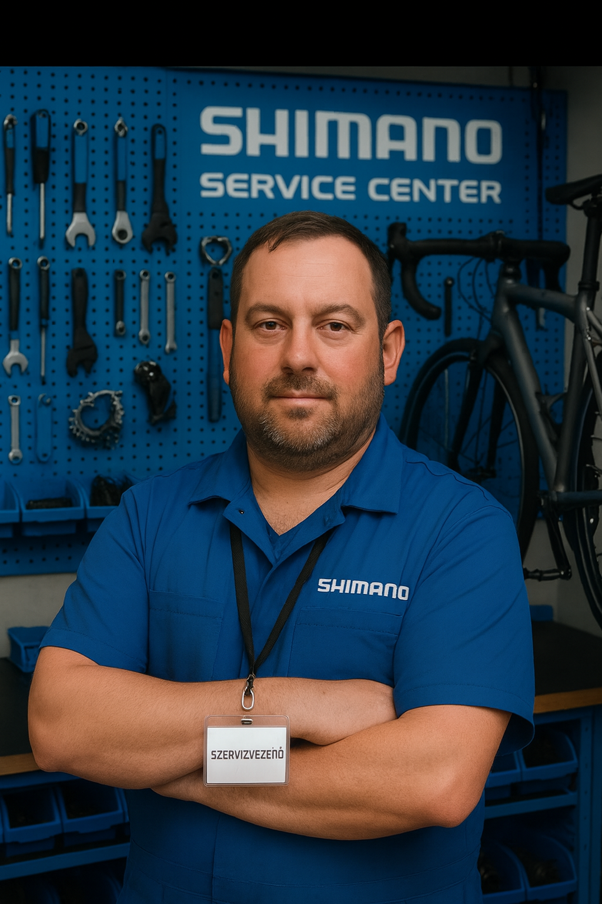

Főállásban Shimano T.E.C. certificált kerékpárszerelőként dolgozom Gyulán. A szervizvezetői tapasztalat megtanított arra, hogy a precizitás és a megbízhatóság nem kompromisszum kérdése — hanem alap.
Mellékállásban webfejlesztéssel foglalkozom — modern, reszponzív weboldalakat és alkalmazásokat készítek. A harmadik területem a SAS programozás, ahol adatelemzési megoldásokat és automatizált riportokat fejlesztek.
Mindhárom területen ugyanaz a szemlélet vezérel: ha valamit megcsinálok, azt rendesen csinálom meg.

Minden munkában a részletek számítanak. Kerékpárnál és kódnál egyaránt.